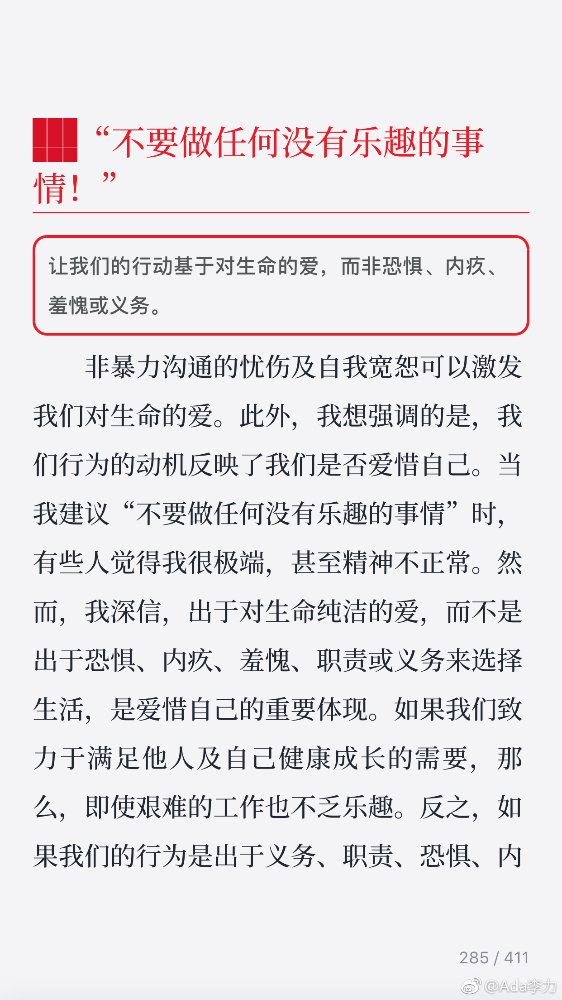

#读书#心理学家写的书通常都会透露这种意思： follow your heart
《非暴力沟通》里面这句“不要做任何没有乐趣的事情”还是惊到我了。作者讨厌写病历，最为一个医生，不写病历很难想象。但作者确实在认同这句话后，再也没写过病历。
反观自己，即使创业是我选择的，这其中很多事请做起来确实没什么乐趣。但可以不做吗？
刚好接下来读的书是《玫琳凯谈人的管理》，玫琳凯曾被评为美国最伟大的女企业家。而她则强调执行的重要性，而执行就是必须完成那些你想逃避的工作。
这种对比发现蛮有意思。
《非暴力沟通》里面这句“不要做任何没有乐趣的事情”还是惊到我了。作者讨厌写病历，最为一个医生，不写病历很难想象。但作者确实在认同这句话后，再也没写过病历。
反观自己，即使创业是我选择的，这其中很多事请做起来确实没什么乐趣。但可以不做吗？
刚好接下来读的书是《玫琳凯谈人的管理》，玫琳凯曾被评为美国最伟大的女企业家。而她则强调执行的重要性，而执行就是必须完成那些你想逃避的工作。
这种对比发现蛮有意思。
- 